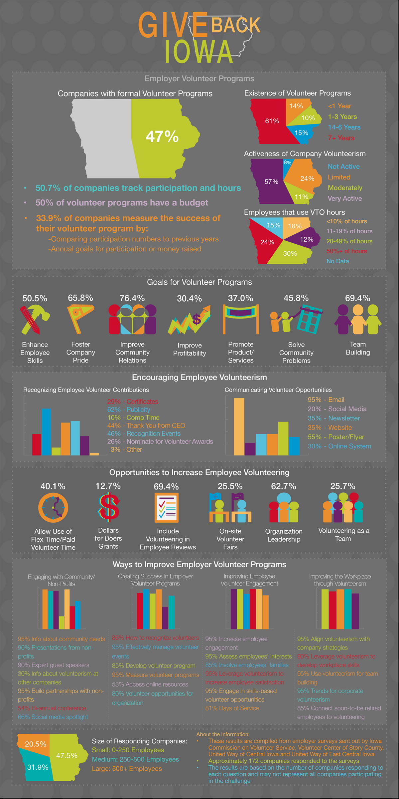

ABOUT THE PROJECT
This infographic was designed for the Iowa Commission on Volunteer Service’s Give Back Iowa Challenge. The purpose of the challenge was to encourage employer volunteering across the state. It was distributed to employers who completed the challenge as well as across ICVS’s social media platforms. The information was compiled from four different surveys sent out by various volunteer organizations throughout the state of Iowa. The infographic is meant to serve as a means to inform employers about the status of employer volunteering throughout Iowa and to highlight areas of potential improvement. ICVS’s branding colors and fonts were used for this project.
